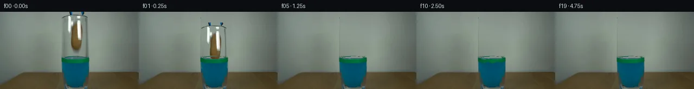

![首帧]()

Round 00
2026-11-06T06:03:00.816166+00:00像素候选变化代码 +371/−0inspection 更新
pixels ea0a7021d1d73f98 · code 9587d59afe6a8e35
查看本轮 generate.py 真实 diff
--- previous/generate.py
+++ current/generate.py
@@ -0,0 +1,371 @@
+"""PixelWorld-Text generation: potato dropped into blue liquid glass.
+
+Method: Pixel-level compositing with physics animation.
+- Extracts potato from first frame using color-difference mask vs interpolated background.
+- Creates clean background plate via horizontal interpolation across potato region.
+- Animates potato falling under gravity; models splash, ripples, and submersion in blue liquid.
+"""
+
+import numpy as np
+from PIL import Image
+from pathlib import Path
+
+# ── constants ──────────────────────────────────────────────────
+H, W = 144, 256
+N_FRAMES = 20
+FPS = 4
+DT = 1.0 / FPS # seconds per frame
+GRAVITY = 640.0 # px/s² (tuned for 256×144 resolution)
+CASE_DIR = Path(__file__).parent
+
+
+# ── helpers ────────────────────────────────────────────────────
+def load_frame():
+ """Load first_frame.png as float64 numpy array."""
+ img = Image.open(CASE_DIR / "first_frame.png")
+ return np.array(img).astype(np.float64)
+
+
+def save_frames(frames):
+ """Save all outputs using artifact_io helper."""
+ frames_uint8 = frames.clip(0, 255).astype(np.uint8)
+ import importlib.util
+ spec = importlib.util.spec_from_file_location("artifact_io", CASE_DIR / "artifact_io.py")
+ mod = importlib.util.module_from_spec(spec)
+ spec.loader.exec_module(mod)
+ mod.save(frames_uint8, CASE_DIR)
+
+ # Also save transition_check.png
+ sheet = Image.new("RGB", (W, 20 * 11), (30, 30, 30))
+ for i in range(N_FRAMES):
+ y = i * 11
+ # Draw a small strip of each frame for side-by-side comparison
+ row_img = Image.fromarray(frames_uint8[i][70:80, :, :])
+ sheet.paste(row_img, (0, y))
+ sheet.save(CASE_DIR / "transition_check.png")
+
+
+# ── mask creation ──────────────────────────────────────────────
+def create_potato_masks(arr):
+ """Create alpha mask for potato and clean background plate."""
+ # Potato region bounds (from observation)
+ px_min, px_max = 115, 170 # slightly wider than exact to catch edges
+ py_min, py_max = 0, 85
+
+ # Create clean background by horizontal interpolation
+ clean_bg = arr.copy()
+
+ for y in range(py_min, min(py_max + 1, H)):
+ # Sample left background (outside potato)
+ left_sample = arr[y, max(0, px_min - 20):max(1, px_min - 5)]
+ right_sample = arr[y, min(W, px_max + 5):min(W, px_max + 20)]
+
+ if len(left_sample) == 0 or len(right_sample) == 0:
+ continue
+
+ left_color = left_sample.mean(axis=0)
+ right_color = right_sample.mean(axis=0)
+
+ for x in range(px_min, min(px_max + 1, W)):
+ t = (x - px_min) / max(1, px_max - px_min)
+ clean_bg[y, x] = (1 - t) * left_color + t * right_color
+
+ # Alpha: pixel differs significantly from interpolated background
+ diff = np.abs(arr - clean_bg)
+ alpha = np.zeros((H, W), dtype=np.float64)
+
+ for y in range(py_min, min(py_max + 1, H)):
+ for x in range(px_min, min(px_max + 1, W)):
+ d = diff[y, x].max()
+ if d > 50:
+ alpha[y, x] = 1.0
+ elif d > 15:
+ alpha[y, x] = (d - 15) / 35.0 # soft edge
+
+ # Clean up: remove isolated small components far from potato center
+ # Find center of mass of strong alpha
+ strong = alpha > 0.5
… diff truncated; 284 more lines …